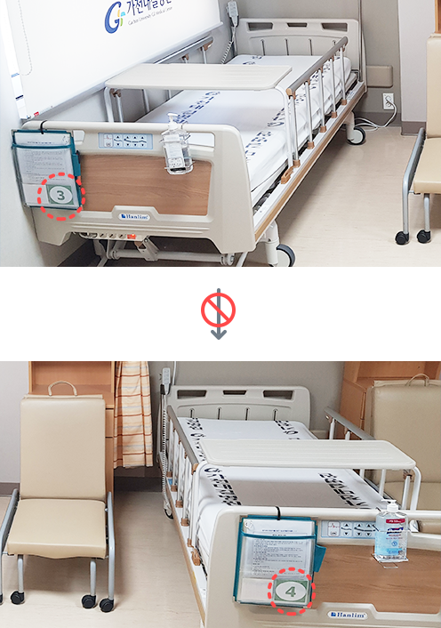
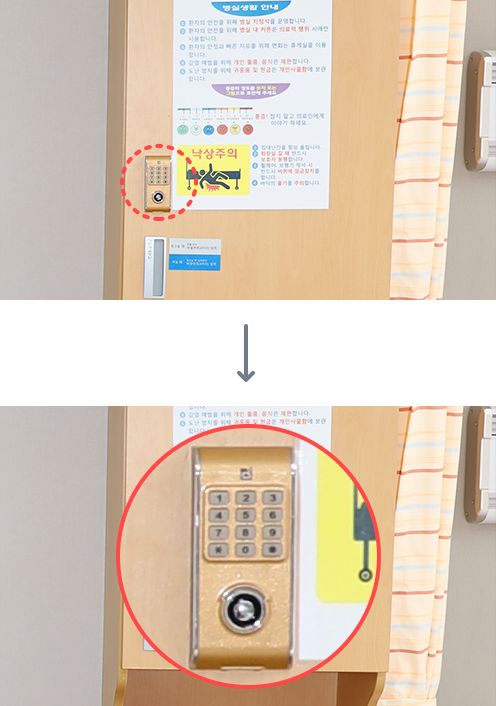

입/퇴원 안내
입/ 퇴원 정보를 제공하고 있습니다.
병실 지정제
환자의 감염 및 안전사고 예방을 위하여 병실 내 침상이동은 제한합니다.

귀중품 관리
- 환자의 감염 및 안전사고 예방을 위하여 병실 내 침상 이동은 제한합니다.
- 그 외 병실 사용 시 사용되어야 하는 개인 물품은 보관함에 비밀번호 4자리를 설정 후 보관해 주시기 바랍니다.

※ 원하시는 비밀번호 4자리 설정 후 사용 해 주시기 바랍니다.
휴대폰 에티켓
조용한 병실환경을 유지 위해 다음사항을 지켜주십시오.
- 통화는 작은 소리로
- DMB, 라디오, Youtube 등
미디어 청취는 이어폰 사용 - 휴대폰은 진동으로
낙상 예방 활동 안내
- 낙상으로 인하여 치명적인 결과(골절,마비,뇌출혈,사망 등)가 발생할 수 있습니다.
- 보호자가 바뀌는 경우 미리 간호사실에 알려 환자의 낙상 예방을 위한 교육을 받도록 하십시오.
침대에서
- 침상 난간을 항상 올려주십시오.
- 침상 난간 위로 넘어다니거나, 침상 위에 서 있는 등의 위험한 행동을 삼가해 주십시오.
- 침대 바퀴는 항상 잠가 놓아 움직이지 않도록 합니다.
- 수면 중간에 침대 밖으로 이동할 경우 잠이 깬 후에 이동합니다.
- 어지러운 증상이 있을 경우에는 침상에서 갑자기 일어나지 마십시오.
도보 이동 시
- 수액과 연결된 정맥 주사 연결선들을 정리한 후 이동합니다.
- 수면제, 혈압약, 인슐린 등을 복용하는 경우 어지러움이 있을 수 있으니 이동 시 도움을 받도록 합니다.
휠체어 이동 시
- 휠체어나 침대로 옮길 때에는 반드시 바퀴를 잠근 후에 이동하여 미끄러지지 않도록 합니다.
- 휠체어나 보행기구 사용 중 위험한 행동은 하지 않도록 주의하십시오.
이동 시
- 필요한 물건은 침상 가까이 두며, 잡으려다 균형을 잃지 않도록 주의해야 합니다.
- 신발은 바닥이 미끄럽지 않고 발에 맞는 것 을 신어야 합니다.
- 취침 전 배뇨를 한 후 수면을 취하도록 합니다.